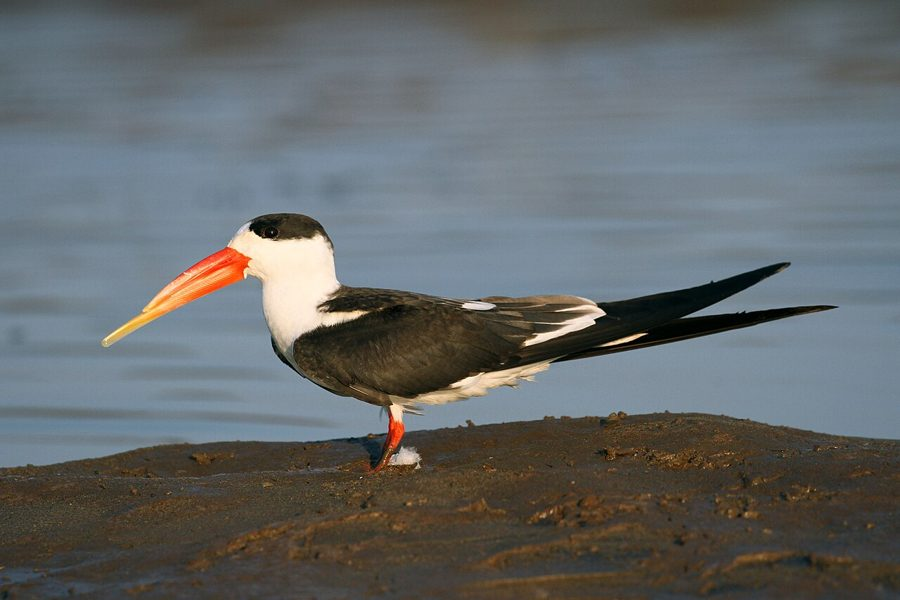

पंछीराIndian Skimmer
Rynchops albicollis · Laridae · BRD-0297

- Scientific name वैज्ञानिक नाम
- Rynchops albicollis Swainson, 1838
- Family कुल
- Laridae
- Hindi हिंदी
- पंछीरा / इंडियन स्किमर
- Local names स्थानीय नाम
- panchira, indian skimmer, pancheera, indiyan skimar
- Status here यहाँ की स्थिति
- native
- Movement आवागमन
- Resident, here all year
- Known from कहाँ दर्ज
- Others have published records from the Basti–Ayodhya districts बस्ती–अयोध्या के ज़िलों से दूसरों के प्रकाशित अभिलेख
- IUCN IUCN
- EN
- Review समीक्षा
- not yet reviewed
When to look कब देखें
Present all year. साल भर मौजूद।
Tell it apart from इनसे अलग पहचानें
पंछीरा / Indian Skimmer
Rynchops albicollis Swainson, 1838 — Laridae
पंछीरा — गंगा, घाघरा और चंबल जैसी बड़ी सदानीरा नदियों के रेतीले टापुओं पर रहने वाला एक अत्यंत दुर्लभ और संकटग्रस्त जलपक्षी है। इसकी चोंच कैंची जैसी अनोखी होती है जिसका निचला हिस्सा ऊपरी हिस्से से काफी लंबा और चपटा होता है। यह पानी की सतह के बिल्कुल ऊपर उड़ते हुए अपनी निचली चोंच पानी में डुबोकर मछलियां पकड़ता है।
Quick Identification त्वरित पहचान
| Feature | Description |
|---|---|
| Bill structure | Unique scissor-like laterally flattened bill; lower mandible significantly longer than upper |
| Bill coloration | Bright glowing orange-red with a conspicuous pale yellowish tip |
| Head and collar | Blackish-brown crown and nape contrasting sharply with gleaming pure white forehead, cheeks, and collar |
| Upper plumage | Dark blackish-brown mantle and wings with broad white trailing edge to secondaries |
| Legs and feet | Bright vermilion-red legs with fully webbed front toes; relatively short tarsi |
Extraordinary tern-like waterbird immediately distinguished on water or in flight by its bizarre orange-red knife-like bill where the lower mandible extends well past the upper. In flight, it displays long pointed dark wings, white collar, and white trailing edges.
Field tip: Scan undisturbed sand islands along the Ghaghara River in early morning or at dusk; look for birds resting in tight packs on wet sandbars.
हिंदी: इसकी चोंच का निचला हिस्सा ऊपरी हिस्से से काफी लंबा और नारंगी-लाल रंग का होता है। सिर का ऊपरी भाग काला और गर्दन पर सफेद कॉलर होता है। यह नदी के शांत पानी पर निचली चोंच डुबोकर उड़ते हुए शिकार करता है।
Morphology आकारिकी
Biometrics as given by Baker (1929):
| Measurement | Value | Source |
|---|---|---|
| Wing | 344 to 398 mm | Baker (1929) |
| Tail | 104 to 112 mm | Baker (1929) |
| Tarsus | 24 to 26 mm | Baker (1929) |
| Culmen | 58 to 75 mm | Baker (1929) |
| Lower mandible | 78 to 100 mm | Baker (1929) |
Adult displays pure white forehead, lores, cheeks, broad neck collar, and entire lower plumage. Crown, nape, mantle, and wings are deep umber-brown to blackish-brown. Flight feathers are blackish with white edges creating a conspicuous wing bar. Tail is white with pale brown central feathers. The astonishing bill is knife-thin and laterally compressed, bright orange-red at base and yellow at tip; lower mandible is noticeably longer than upper. Legs and feet are brilliant vermilion; iris is deep brown. Juvenile shows paler brown upper plumage with buff feather margins and less unequal mandibles.
Vocalisations. A sharp, barking, nasal kyap-kyap uttered when taking wing or defending nesting sandbars against intruders.
हिंदी: इसके पंख बहुत लंबे और चोंच चाकू जैसी पतली होती है (Baker 1929)। निचली चोंच 78 से 100 मिमी तक लंबी होती है जबकि ऊपरी चोंच 58 से 75 मिमी होती है। इसके पैर चमकीले सिंदूरी-लाल होते हैं।
Behaviour & Ecology व्यवहार और पारिस्थितिकी
A highly specialized crepuscular and nocturnal forager. During bright midday heat, flocks sit tightly packed on exposed sand spits, facing into the wind with bills resting forward on sand. Towards evening, they become intensely active, flying low in synchrony over placid river reaches. The foraging flight is effortless and buoyant: the bird flies just inches above the water with lower mandible knife-cutting through the surface; upon contacting a fish or shrimp, the upper mandible snaps shut instantly by reflex.
हिंदी: यह दिन में नदी के रेतीले टापुओं पर झुंड बनाकर बैठता है। शाम होते ही यह सक्रिय हो जाता है और पानी की सतह पर तैरती छोटी मछलियों को अपनी पानी में डूबी चोंच से छूते ही तुरंत दबा लेता है। इसकी उड़ान बहुत शांत और सधी हुई होती है।
Life Cycle / Phenology जीवन चक्र
Breeds colonially from February to May on mid-river sand islands before monsoon floods inundate the riverbed. It often nests alongside river terns and pratincoles for collective defense. The nest is a simple unlined scrape scooped into bare dry sand. A clutch of three or four pale buff eggs marked with dark brown blotches is laid. Both parents incubate, frequently wetting their breast feathers in river water to cool the eggs during blistering midday temperatures.
हिंदी: फरवरी से मई के बीच गर्मी के दिनों में यह नदी के बीच बने रेतीले टापुओं पर घोंसला बनाता है। रेत पर एक छोटा गड्ढा बनाकर यह तीन-चार अंडे देता है। तेज धूप में अंडों को ठंडा रखने के लिए माता-पिता अपने पेट के परों को नदी के पानी में भिगोकर अंडों पर बैठते हैं।
Host Plants or Prey आहार
Strictly carnivorous and piscivorous. It feeds upon small schooling surface fishes such as minnows, barbs and juvenile carps, along with freshwater shrimps. Tactile foraging enables it to hunt effectively in turbid river waters and in total darkness after sunset.
हिंदी: इसका मुख्य आहार छोटी मछलियां और झींगे हैं। यह केवल छूकर शिकार पहचानता है, इसलिए मटमैले पानी में या घुप अंधेरे में भी यह पानी में तैरती छोटी मछलियों को बहुत आसानी से पकड़ लेता है।
Predators / Natural Enemies शत्रु
Nesting colonies are exceptionally vulnerable to terrestrial and aerial predators. Feral dogs, golden jackals, and monitor lizards swim across shallow channels to raid sandbar colonies, devouring clutches and nestlings. Gulls, black kites, and crows scavenge unguarded eggs.
हिंदी: नदी के टापू पर बने घोंसलों को आवारा कुत्ते, सियार और गोह पानी तैरकर नष्ट कर देते हैं। कौवे और चील भी इसके अंडों को चुरा लेते हैं।
Agricultural / Human Relevance कृषि प्रासंगिकता
Protected under the Wildlife (Protection) Act 1972 and classified as Endangered (EN). It serves as a keystone indicator species for the ecological health of major river systems. Intensive sand mining, unregulated motorized boating, water pollution, and unpredictable dam water releases that drown sandbar nests represent catastrophic threats to its survival.
हिंदी: वन्यजीव (संरक्षण) अधिनियम 1972 के तहत सर्वोच्च संरक्षण प्राप्त और संकटग्रस्त (EN)। यह नदियों की स्वच्छता और प्राकृतिक बहाव का प्रतीक है। रेत के अंधाधुंध खनन और बांधों से अचानक छोड़े जाने वाले पानी से इसके घोंसले बह जाते हैं जिससे यह पक्षी लुप्त होने की कगार पर है।
Expected Locally स्थानीय रूप से अपेक्षित
Not a field record. Written from published accounts for eastern Uttar Pradesh. No confirmed local sighting yet — if you have seen it, that is what the atlas needs.
अभी तक स्थानीय पुष्टि नहीं। यह विवरण प्रकाशित स्रोतों से है, किसी अवलोकन से नहीं।
Occurs on wide perennial rivers possessing expansive undisturbed sand islands and low human interference. Observers in eastern Uttar Pradesh should look along broad, tranquil reaches of the Ghaghara River and its major confluences during the pre-monsoon dry season from February to May.
GBIF holds published records from these districts.
A first local record for the atlas would be a clear photograph showing plumage details, accompanied by date, time, and precise location coordinates sent through the project's About page.
हिंदी: यह पक्षी बस्ती और अयोध्या के पास घाघरा नदी के बड़े रेतीले टापुओं पर देखा जा सकता है। फरवरी से मई के महीनों में जब नदी का जलस्तर कम होता है और रेत के टीले बाहर आ जाते हैं, तब इसकी खोज की जानी चाहिए।
Distribution वितरण
Global range: Formerly widespread across the river systems of the Indian Subcontinent and Southeast Asia; now largely restricted to India, with relict breeding populations in Pakistan, Bangladesh, and Myanmar.
In India: Major breeding strongholds along the Chambal, Ganga, Yamuna, Son, and Brahmaputra rivers, with seasonal wandering to peninsular river basins.
In Uttar Pradesh: Documented along the Chambal Sanctuary, the Ganga corridor, and historical reaches of the Ghaghara and Yamuna.
In Basti district / eastern UP: Expected along the Ghaghara River corridor based on regional riverine breeding records.
हिंदी: पहले यह पूरे दक्षिण एशिया में पाया जाता था, लेकिन अब यह केवल भारत की कुछ बड़ी नदियों (चंबल, गंगा, घाघरा, ब्रह्मपुत्र) में ही सीमित रह गया है। उत्तर प्रदेश में घाघरा और गंगा के कछार इसके महत्वपूर्ण क्षेत्र हैं।
Research Questions शोध प्रश्न
- Are undisturbed sand islands along the Ghaghara River in eastern Uttar Pradesh currently utilized for colonial breeding?
- How do unseasonal upstream barrage water releases affect nesting success on riverine sandbars? / क्या बांधों से अचानक पानी छोड़े जाने से इस दुर्लभ पक्षी के घोंसले और अंडे बह जाते हैं?
- What is the extent of predation by feral dogs on sandbar colonies compared to native jackals?
- A schoolchild can watch the river from a safe bank at sunset to observe whether any waterbird skims with its beak cutting the water / क्या कोई बच्चा शाम को नदी किनारे से पानी चीरकर मछली पकड़ते अनोखे पक्षी को देख सकता है?
- How can local fishing communities be engaged to safeguard breeding sandbars from livestock trampling?
हिंदी: नदी से रेत खनन रोकने से क्या इस पक्षी के घोंसलों को बचाया जा सकता है? क्या स्थानीय मल्लाह और मछुआरे इसके अंडों की रखवाली में मदद कर सकते हैं?
Similar Species मिलती-जुलती प्रजातियाँ
| Species | How to tell apart | हिंदी | |
|---|---|---|---|
| River Tern \ | Sterna aurantia | Symmetrical yellow bill with equal mandibles, grey mantle, and deeply forked tail | रिवर टर्न की चोंच चमकीली पीली और बराबर होती है तथा पूंछ गहरी दोमुंही होती है |
| Black-bellied Tern \ | Sterna acuticauda | Much smaller size, black belly in breeding plumage, and orange-yellow bill of normal proportions | ब्लैक-बैलिड टर्न का पेट काला होता है और चोंच सामान्य आकार की नारंगी होती है |
Field rule: Black-capped and white waterbird with unique knife-like orange-red bill whose lower mandible extends far beyond the upper.
हिंदी: कैंची जैसी नारंगी चोंच जिसका निचला हिस्सा लंबा हो और पानी को चीरकर उड़ने का अनोखा तरीका इस पक्षी को बिल्कुल अलग पहचान देता है।
Taxonomy & Classification वर्गीकरण
Original description. Swainson (1838) — see GBIF.
Subspecies. Monotypic species. Baker (1929) describes the species under the spelling Rhyncops albicollis.
Family and order placement. Belongs to the gull and tern family Laridae (subfamily Rynchopinae), order Charadriiformes, class Aves.
Phylogenetic notes. One of only three skimmer species worldwide (Rynchops), displaying extreme morphological specializations for tactile skimming.
IUCN status rationale. Assessed as Endangered (EN) by IUCN (BirdLife International 2020) owing to precipitous population declines caused by dam operations, sand mining, and habitat degradation.
हिंदी: इसका वैज्ञानिक विवरण स्वैनसन ने 1838 में दिया था। यह लैरिडी कुल का पक्षी है और घोंसले नष्ट होने के कारण इसे वैश्विक रूप से संकटग्रस्त (EN) घोषित किया गया है।
Photo Gallery फोटो गैलरी
No photos yet — add field photos to media/species/indian_skimmer/ and run node scripts/sync_photos.js.
Photos needed आवश्यक फोटो
- [ ] Flock resting on river sandbar showing distinctive unequal bill mandibles (रेतीले टापू पर बैठा झुंड जिसमें असमान चोंच साफ दिखे)
- [ ] Individual skimming low over calm river water with lower mandible submerged (पानी की सतह पर निचली चोंच डुबोकर उड़ता हुआ पक्षी)
- [ ] Scrape nest with eggs on open river sand (नदी की खुली रेत पर अंडों वाला घोंसला)
References संदर्भ
- Original description: Swainson, 1838 — see GBIF.
- Baker, E. C. S. (1929). The Fauna of British India, Including Ceylon and Burma: Birds. 2nd ed., Vol. 6. Taylor & Francis, London. (as Rhyncops albicollis).
- Ali, S. & Ripley, S. D. (1983). Handbook of the Birds of India and Pakistan. Compact ed. Oxford University Press, New Delhi.
- Grimmett, R., Inskipp, C. & Inskipp, T. (2011). Birds of the Indian Subcontinent. 2nd ed. Christopher Helm, London.
- Rasmussen, P. C. & Anderton, J. C. (2012). Birds of South Asia: The Ripley Guide. Vols. 1–2. 2nd ed. Smithsonian Institution and Lynx Edicions.
- IUCN Red List of Threatened Species: Rynchops albicollis, 2020.
- GBIF Occurrence Data — Rynchops albicollis, India (2025).
Source file: species/fauna/birds/indian_skimmer.md